PawLovers pet accessory eCommerce brand identity
2023
PawLovers sells accessories for pets online. I built the brand from the name down: a paw whose big pad is a heart, a wordmark that sits unevenly like a dog does, four colours that each come with a softer twin for photography, and the card, banner and post templates the shop runs on.1
A paw with a heart for a pad
Every pet brand on earth uses a paw print, and I kept it anyway. A customer recognises a paw at favicon size without reading a word, and a small shop cannot afford a symbol that needs explaining. What I changed is the one part of a paw that costs nothing to change. The big pad became a heart.
I drew the toes the way a real paw sits: two tall pads in the middle, two smaller ones lower and turned outward. The heart underneath is wide and low, so the whole mark still reads as a paw first and a heart second. Get that order wrong and it becomes a Valentine.
The mark never sits on a field in its own flat colour. On the navy it turns a lighter blue, on the red a pink, on the green a mint. I wanted it to sit inside the colour rather than on top of it, so the wordmark beside it stays the loudest thing in the lockup.
Letters that sit like a dog
The name is two words, so I gave it two lockups. Stacked, PAW over LOVERS with the paw tucked against the W, for anything square: the shop avatar, packaging, an app icon. Horizontal, PAWLOVERS run together with the paw in front, for a site header or a banner where height is scarce.2
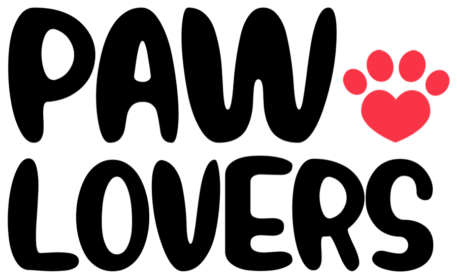
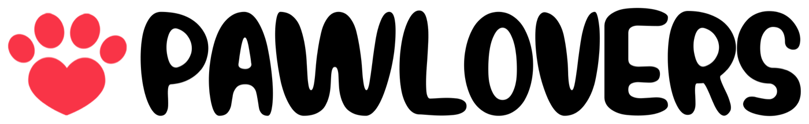
For the letters I chose fat rounded capitals that refuse to sit level. The A leans, the W dips in the middle, the S rocks back. It is the same energy as a dog that has been told to sit and is doing it badly. I paired that with nothing decorative anywhere else in the system, because one bouncy voice is a personality and two is a mess.
A pet brand does not need to look premium. It needs to look like it likes your dog. Everything in this identity is tuned to that one feeling.
Four colours, each with a softer twin
I built the palette as four saturated primaries and, under each one, a lighter partner I reserve for photographs.
Fields for the logo, for type, for anything flat
Backdrops for photography, for anything with a dog in it
I split them because of fur. A golden retriever against the navy turns into a silhouette with a tongue. Against the sky blue the same dog keeps its eyes, its coat and its expression, and the expression is the product. So the primaries carry the logo and the tints carry the animals. Amber is the exception. It is already light enough to hold a dog, so it appears in both rows unchanged.
On colour I switched the wordmark from white to a warm cream, #FFF6D7. Pure white
on saturated red or green vibrates at the edges, and cream calms it without reading as a
different colour. It is the kind of decision nobody notices, which is the point.
Dogs, straight on, tongue out
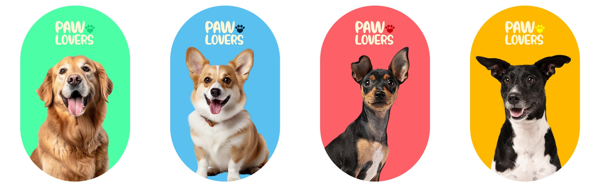
I wrote the photography rule in one line: the animal looks at the camera, mouth open if the breed allows it, cut out and placed on a backdrop tint. No lifestyle scenes, no owners, no products in the frame. A shop sells the product on the product page. Everywhere else it should be selling the feeling of a dog that is pleased to see you.3
I made the cards capsules, a 4:5 rectangle with fully rounded ends, because an online shop is already a grid of squares and I wanted the category tiles to be the one shape that is not one. On a capsule the paw in the lockup switches back to the primary of its field, red on coral, navy on sky, so the four cards read as a set and not as four repeats.
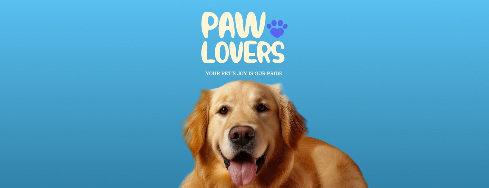
The tagline needed a second voice, and I picked a slab serif for it.
Your pet’s joy is our pride.
#57BFEE to #3284AA.Next to the bouncing wordmark a slab serif is the straight man. It is sturdy, it is level, and it lets the lettering above it be the one having fun. Setting it small and in capitals keeps it a caption rather than a headline, which is all a tagline should be.
A post that stays on brand without the logo
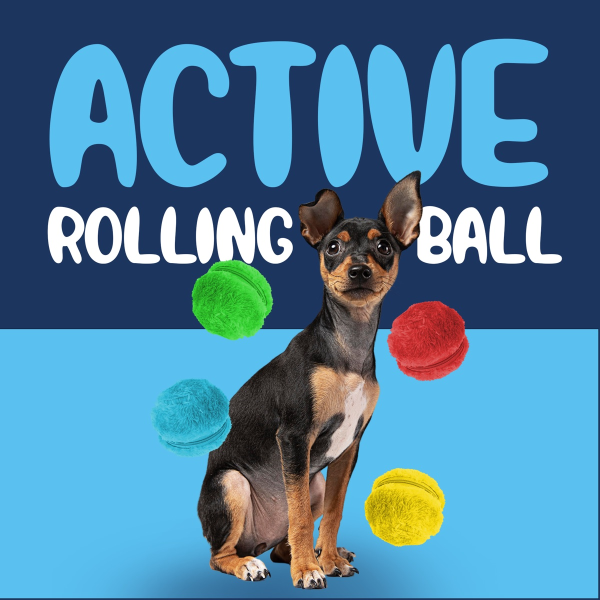
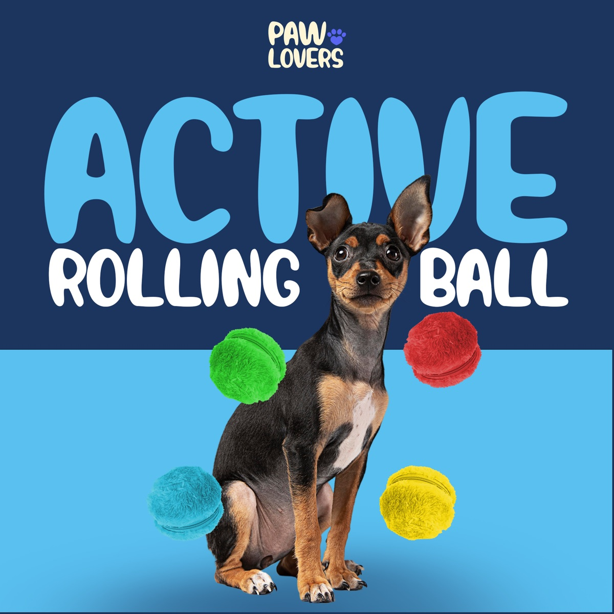
The first product post I designed was for a rolling ball toy, and I made it twice. Once without the logo, once with it. I wanted to know whether the template was carrying the brand on its own, because if a post only looks like PawLovers when the lockup is in the corner, the system is not doing its job.
It passed. I built the background as two bands, a deep navy and the sky blue, the same dark over light logic as the palette. I set the product name in the wordmark’s rounded lettering, so the brand voice is in the type before the brand name appears. And the toy itself ships in green, red, blue and yellow, which meant the product photography was already wearing the palette. The lockup went in afterwards, small, at the top, as a signature and not as a shout.
What a small brand taught me
PawLovers had no design team, so whatever I handed over had to be usable by whoever posted next. That is why nearly everything in this identity comes in pairs. Stacked and horizontal. White ink and black ink. A primary and its tint. Two choices is a decision a shop owner can make at eleven at night with a photo of a corgi and a sale to announce. Ten choices is a phone call to me.
The other thing I took from it is how much a system can carry when it is small enough to memorise. Four colours, one red paw, one rule for photographs. I have worked on identities with thirty tokens and forty components since, and I still think the test is the same one I ran on that rolling ball post. Take the logo off. If it still looks like the brand, the brand is working.
- The Figma file for this project holds the finished assets on one page: the lockups at 3000 px, the colour chips, the cards, three banner variants and the post template in two versions. The sketches lived elsewhere, so this page shows the outcomes and the reasoning, not the rounds.
- The horizontal files are named хэвтээ in the layers, Mongolian for horizontal. I named them for the people who would be using them.
- The dogs are licensed stock portraits, cut out and re-lit for the tints. A shop this size does not have a photography budget, so the rule had to work with pictures it could afford.